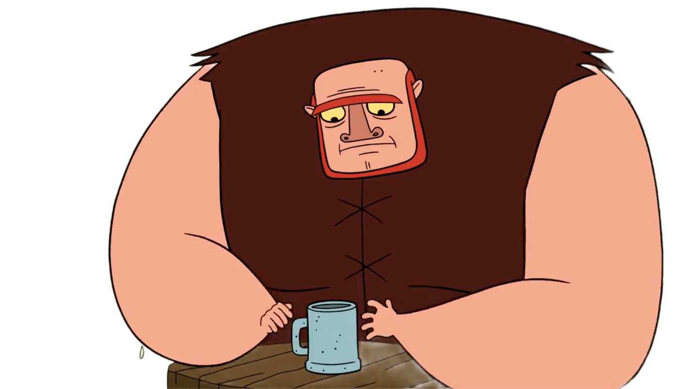
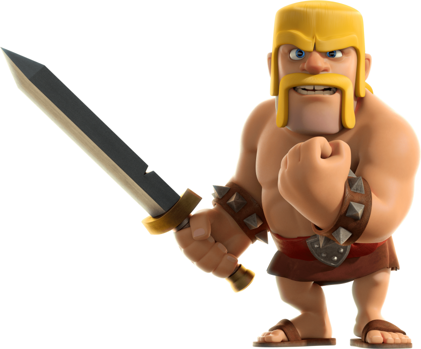

Welcome to my profile
my coc id
⇣
#8LGQURY0Y
Hi I'm Z
Wanna hear the story
how I got into playing Clash of Clans?
 So, picture this: it’s 2014, and I’m just chilling, watching my brother play this super cool game on his phone. Every time he played, I’d be glued to his side, just staring at the screen. The sound effects, the screen shaking—it was all so epic. I didn’t even have a phone back then, so I was just living vicariously through him.
Fast forward to 2015, and I finally get my hands on a phone—okay, it was almost falling apart, but hey, it worked! I started downloading games, figuring out how to install and play them, feeling like a tech genius. But Clash of Clans? That was the holy grail. I was dying to try it out.
Then, my brother moves away to study other place and, guess what? He leaves his phone behind! Jackpot. The first thing I did was fire up Clash of Clans. I was dropped into this Town Hall 8 setup, completely clueless. I just started clicking random buttons, trying to figure out what the heck was going on. But somehow, I managed to get the hang of it.
and then
I played nonstop, and after a few months, I even created another
account and a clan, leveling it up to 12. I was obsessed—playing
every day until 2018. Then, life (aka school and responsibilities)
got in the way, and I had to step back. But I still hop on sometimes
for a bit of nostalgia. Those were some good times, messing around
with friends and just having a blast.
And that’s my Clash of Clans origin story!
--- Life is really interesting isn't it? ---